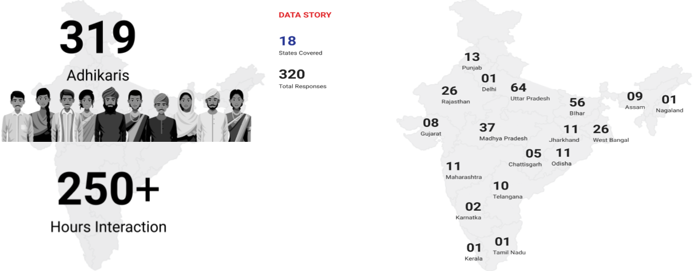

Merchant tool kit
User Research Analysis
Project brief
The new Product Offering, Digital Dukaan - The Merchant Toolkit, is a one-stop shop
for our Adhikaris to manage their business outside Spice and bringing it within the ecosystem.

What is Merchant toolkit ?
Its an set of toolkits for a remote village merchant. Set of toolkits are following:
- To offer a promotion toolkit, through which the merchant can promote the inventory with ready made templates
- Inventory management toolkit for merchants
- Customers can purchase the daily needed items from an app. And the merchant can accept/reject the order.
- Financial toolkit. To offer financial services to the merchants
Who's involved ?
To gather user insights from our users. We needed to target large number of SMAs for quality inputs. User interviews were divided into two parts:
The Process
- Current scenario – User’s ecosystem
- The five why’s
- Current scenario – Gap & Opportunity
- Design thinking process – Double diamond
- Brainstorming – Team activity (Affinity mapping), Affinity mapping & A tentative user flow
- Brainstorming -- basic prototype for merchant
- Task flow -- On-boarding of merchant (User interface), A tentative user flow, Product addition (User interface), Promoting a product (User interface)
- User research and design thinking
- Story of the data
Problem statement
“How to Empower Adhikaris to bring their main business outside the Spice Ecosystem within Spice”
What business problem are we trying to solve?
Empowering Adhikaris to Digitize their existing Business outside Spice Money

Brainstorming with team - Affinity mapping
As a team we created a conceptual model based on these gaps. To make the conceptual model more visible and understandable we did brainstorming. During brainstorming we found every each one of team member have different ideas. The idea was to design two applications
- Merchant’s side
- Customer’s side
Design Process

Starting of User research - questionnaire - creating a script
.svg)
Story of the data
.svg)
Low-fid designs - Proof of Concept